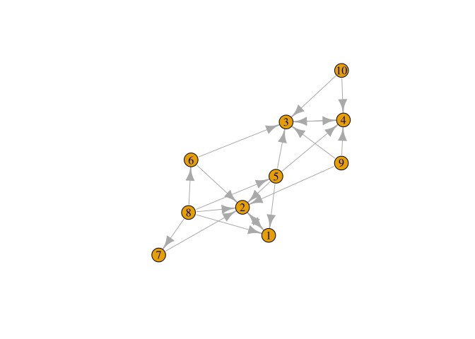
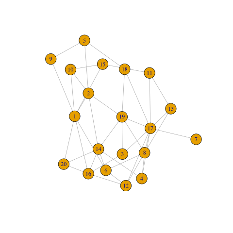

Can we determine the second eigenvalue from the method parameters? For PageRank, the second eigenvalue is equal to the smoothing parameter \(\alpha\)
Yes. An open question for the Power Walk method is, can we determine the second eigenvalue from the method parameters? For PageRank, the second eigenvalue is equal to the smoothing parameter \(\alpha\). The second eigenvalue determines how long the algorithm takes to converge and how stable the solution is. To begin, implement the method for computing PageRank and then the Power Walk. It can all be done using sparse matrices, so it only requires a fraction of the memory and is each iteration is quick.
Take the exemplar Graph from Figure 1:
\[\begin{aligned} \Gamma = I - n D^{- 1}_B \\\end{aligned}\]
Where we have the following:
\[\begin{aligned} \beta &= 10 \\ B &= \beta^A \\ A &= \begin{bmatrix} 0& 1& 0& 0 \\ 1& 0& 0& 0 \\ 0& 0& 0& 1 \\ 0& 0& 1& 0 \end{bmatrix} \\ \implies B &= \begin{bmatrix} 10 & 1 & 1 & 1 \\ 1 & 10 & 1 & 1 \\ 1 & 1 & 10 & 1 \\ 1 & 1 & 1 & 10 \\ \end{bmatrix} \\ \text{$D_B$ is a diagonal matrix of the column sums:}\\ D &= \begin{bmatrix} 13 & 0 & 0 & 0 \\ 0 & 13 & 0 & 0 \\ 0 & 0 & 13 & 0 \\ 0 & 0 & 0 & 13 \end{bmatrix} \\ \text{Hence the Inverse is:}\\ D_B^{-1}&= \frac{I}{13}\\ \text{Putting it all together:}\\ \Gamma &= I - n D^{- 1}_B \\ &= I - \frac{4 \cdot I}{13} \\ &= \frac{9}{13} \cdot I \\ &= \begin{bmatrix} \frac{9}{13} & 0 & 0 & 0 \\ 0 & \frac{9}{13} & 0 & 0 \\ 0 & 0 & \frac{9}{13} & 0 \\ 0 & 0 & 0 & \frac{9}{13} \end{bmatrix} \\ & \approx \begin{bmatrix} 0.6923 & 0 & 0 & 0 \\ 0 & 0.6923 & 0 & 0 \\ 0 & 0 & 0.6923 & 0 \\ 0 & 0 & 0 & 0.6923 \end{bmatrix}\end{aligned}\]
These asses node centrality by performing a random walk across the graph and recording the frequencies of landing on a given vertex.
Usually Page Rank refers to the random surfer but I’m using it in this document to refer to any process that attributes a probability of landing on a vertex during a random walk to a graph that is not ergodic.
If each vertex is connected the graph is said to be ergodic and there is a closed solution for the limit values of the frequencies given this random walk:
The eigenvalue equal to 1
If the graph is not directed \(\vec{p}\) is a vector of length \(n\):
\(n\) is the number of nodes in the graph \(G\)
\(\vec{p}_{i} = \frac{\mathrm{deg}(v_{1})}{\mathrm{vol}(G)}\)
\(\mathrm{vol}(G) = \sum^{n}_{i = 1} \left[ \mathrm{indeg}(v) \right] = \sum^{n}_{i = 1} \left[ \mathrm{outdeg}(v) \right ] = \sum^{n}_{i = 1} \left[ \mathrm{deg}(v) \right]\)
For large matrices calculating the eigenvalues will be expensive and so instead the power method is used, which is essentially looping over until the vector converges to a solution.
\[\begin{aligned} \vec{p} = \mathrm{T}\vec{p} \label{eq:pageRank-Method}\end{aligned}\] where:
Is the adjacency Matrix, an element is 1 if movement from the row vertex to the column vertex is permitted.
The matrix may be weighted in some way, for example 5 edges between vertices may be such that a 5 is used in the matrix not a 1
An undirected graph will be such that \(\mathbf{A} = \mathbf{A}^{\mathrm{\mathbf{T}}}\)
Is the transition probability matrix, an element in the matrix describes the probability of moving from the column-vertex to the row-vertex
The transition matrix is intended to be such that for a given state distribution \(\vec{p}\), the next iteration of a random walk will be \(\mathrm{T}\vec{p}\)
Observe also that \(\mathrm{T} = \mathrm{T} \cdot \mathrm{diag}(\mathtt{colsums}(\mathrm{A^{\mathrm{T}}}))\)
i.e. the transpose of the adjacency matrix with each column scaled to 1.
For con If a graph is non-ergodic, then a random walk isn’t as easy to implement because in escence there are multiple disconnected graphs, to address this, some value \(\lambda\) is introduces which represents the probability of moving from one vertex to any other vertex. Essentially the difference here is
if (require("pacman")) {
library(pacman)
}else{
install.packages("pacman")
library(pacman)
} pacman::p_load(tidyverse, Matrix, igraph, plotly, mise, docstring)Example Graph [example-graph] Consider the following Graph taken from the paper:
g1 <- igraph::graph.formula(1++2, 1+-8, 1+-5, 2+-5, 2+-7, 2+-8, 2+-6, 2+-9, 3++4, 3+-5, 3+-6, 3+-9, 3+-10, 4+-9, 4+-10, 4+-5, 5+-8, 6+-8, 7+-8)
plot(g1)
Adjacency Matrix [adjacency-matrix] The adjacency Matrix is given by:
A <- igraph::get.adjacency(g1, names = TRUE, sparse = FALSE) %>%
as.matrix()
## Adjust the Order
(A <- A[order(as.integer(row.names(A))), order(as.integer(colnames(A)))]) ## 1 2 3 4 5 6 7 8 9 10
## 1 0 1 0 0 0 0 0 0 0 0
## 2 1 0 0 0 0 0 0 0 0 0
## 3 0 0 0 1 0 0 0 0 0 0
## 4 0 0 1 0 0 0 0 0 0 0
## 5 1 1 1 1 0 0 0 0 0 0
## 6 0 1 1 0 0 0 0 0 0 0
## 7 0 1 0 0 0 0 0 0 0 0
## 8 1 1 0 0 1 1 1 0 0 0
## 9 0 1 1 1 0 0 0 0 0 0
## 10 0 0 1 1 0 0 0 0 0 0State Distribution [state-distribution] The state distribution is the transpose of the adjacency matrix:
(p0 <- t(A)) ## 1 2 3 4 5 6 7 8 9 10
## 1 0 1 0 0 1 0 0 1 0 0
## 2 1 0 0 0 1 1 1 1 1 0
## 3 0 0 0 1 1 1 0 0 1 1
## 4 0 0 1 0 1 0 0 0 1 1
## 5 0 0 0 0 0 0 0 1 0 0
## 6 0 0 0 0 0 0 0 1 0 0
## 7 0 0 0 0 0 0 0 1 0 0
## 8 0 0 0 0 0 0 0 0 0 0
## 9 0 0 0 0 0 0 0 0 0 0
## 10 0 0 0 0 0 0 0 0 0 0Probability Transition Matrix [probability-transition-matrix] The probability transition matrix is such that each column of the initial state distribution (i.e. the transposed adjacency matrix) is scaled to 1.
p0 %*% diag(1/colSums(p0)) ## [,1] [,2] [,3] [,4] [,5] [,6] [,7] [,8] [,9] [,10]
## 1 0 1 0 0 0.25 0.0 0 0.2 0.0000000 0.0
## 2 1 0 0 0 0.25 0.5 1 0.2 0.3333333 0.0
## 3 0 0 0 1 0.25 0.5 0 0.0 0.3333333 0.5
## 4 0 0 1 0 0.25 0.0 0 0.0 0.3333333 0.5
## 5 0 0 0 0 0.00 0.0 0 0.2 0.0000000 0.0
## 6 0 0 0 0 0.00 0.0 0 0.2 0.0000000 0.0
## 7 0 0 0 0 0.00 0.0 0 0.2 0.0000000 0.0
## 8 0 0 0 0 0.00 0.0 0 0.0 0.0000000 0.0
## 9 0 0 0 0 0.00 0.0 0 0.0 0.0000000 0.0
## 10 0 0 0 0 0.00 0.0 0 0.0 0.0000000 0.0Create a Function [create-a-function]
adj_to_probTrans <- function(adjMat) {
t(adjMat) %*% diag(1/colSums(t(adjMat)))
}
(T <- adj_to_probTrans(A)) %>% round(2) ## [,1] [,2] [,3] [,4] [,5] [,6] [,7] [,8] [,9] [,10]
## 1 0 1 0 0 0.25 0.0 0 0.2 0.00 0.0
## 2 1 0 0 0 0.25 0.5 1 0.2 0.33 0.0
## 3 0 0 0 1 0.25 0.5 0 0.0 0.33 0.5
## 4 0 0 1 0 0.25 0.0 0 0.0 0.33 0.5
## 5 0 0 0 0 0.00 0.0 0 0.2 0.00 0.0
## 6 0 0 0 0 0.00 0.0 0 0.2 0.00 0.0
## 7 0 0 0 0 0.00 0.0 0 0.2 0.00 0.0
## 8 0 0 0 0 0.00 0.0 0 0.0 0.00 0.0
## 9 0 0 0 0 0.00 0.0 0 0.0 0.00 0.0
## 10 0 0 0 0 0.00 0.0 0 0.0 0.00 0.0Page Rank Random Surfer [page-rank-random-surfer] The random surfer page rank method modifies the probability transition matrix \(T\) so that the method works also for non-ergodic graphs by introducing the possibility of a random jump, we’ll call the surfer transition matrix \(S\):
\[\begin{aligned} S &= \lambda T + \left( 1- \lambda \right)B :\\ \ \\ B&= \begin{bmatrix} \frac{1}{N} & \frac{1}{N} & \ldots & \frac{1}{N} \\ \frac{1}{N} & \frac{1}{N} & \ldots & \frac{1}{N} \\ \vdots & \vdots & \ddots & \vdots \\ \frac{1}{N} & \frac{1}{N} & \ldots & \frac{1}{N} \\ \end{bmatrix} \\ N&= \left| \left| V \right| \right| \\ \lambda &\in [0,1]\end{aligned}\]
B <- matrix(rep(1/nrow(T), length.out = nrow(T)**2), nrow = nrow(T))
l <- 0.8123456789
S <- l*T+(1-l)*BEigen Value Method [eigen-value-method] The eigenvector corresponding to the the eigenvalue of 1 will be the stationary point:
eigen(S, symmetric = FALSE)eigen() decomposition
$values
[1] 1.000000e+00 -8.123457e-01 -8.123457e-01 8.123457e-01 -3.407464e-09 3.407464e-09
[7] 6.878591e-17 -4.393838e-17 -1.126771e-18 -1.292735e-32
$vectors
[,1] [,2] [,3] [,4] [,5] [,6]
[1,] 0.48726141 -7.071005e-01 1.590774e-03 5.000000e-01 6.735753e-01 -6.735753e-01
[2,] 0.52676629 7.071005e-01 -1.590774e-03 5.000000e-01 9.622504e-02 -9.622505e-02
[3,] 0.49149620 -2.975837e-03 7.071050e-01 -5.000000e-01 9.622504e-02 -9.622505e-02
[4,] 0.48044122 2.975837e-03 -7.071050e-01 -5.000000e-01 2.886751e-01 -2.886751e-01
[5,] 0.04932738 1.463673e-18 -5.541166e-17 2.124631e-17 -3.849002e-01 3.849002e-01
[6,] 0.04932738 1.463673e-18 5.541166e-17 2.124631e-17 -3.849002e-01 3.849002e-01
[7,] 0.04932738 1.463673e-18 -2.077937e-17 2.124631e-17 -3.849002e-01 3.849002e-01
[8,] 0.04243328 -6.484884e-18 -1.103904e-17 6.319692e-17 8.072508e-09 8.072508e-09
[9,] 0.04243328 6.952446e-18 -9.740331e-18 6.005334e-17 8.072508e-09 8.072509e-09
[10,] 0.04243328 6.952446e-18 -9.740331e-18 6.005334e-17 8.072508e-09 8.072509e-09
[,7] [,8] [,9] [,10]
[1,] -3.963430e-01 3.962600e-01 1.828019e-01 -1.752367e-01
[2,] -1.291621e-01 2.027302e-01 2.199538e-01 -2.197680e-01
[3,] -3.955284e-01 3.894308e-02 2.223048e-01 -2.248876e-01
[4,] -4.215353e-01 1.043870e-01 2.747562e-01 -2.777266e-01
[5,] 5.166485e-01 -8.109210e-01 -8.798152e-01 8.790721e-01
[6,] 5.201366e-02 -1.308878e-01 -1.049028e-01 1.056778e-01
[7,] 1.346275e-01 -1.936007e-01 9.054366e-02 -9.554811e-02
[8,] 2.547528e-16 -1.352936e-16 -1.025353e-16 1.072771e-16
[9,] 3.196396e-01 1.965446e-01 -2.821213e-03 -5.466313e-03
[10,] 3.196396e-01 1.965446e-01 -2.821213e-03 1.388344e-02
So in this case the stationary point is
\(\langle -0.49, -0.53, -0.49, -0.48, -0.05, -0.05, -0.05, -0.04, -0.04, -0.04 \rangle\)
which can be verified:
\[1 \vec{p} = S\vec{p}\]
(p <- eigen(S)$values[1] * eigen(S)$vectors[,1]) ## [1] -0.48531271 -0.52732002 -0.49152601 -0.47977477 -0.05288058 -0.05288058
## [7] -0.05288058 -0.04558671 -0.04558671 -0.04558671 (p_new <- S %*% p) ## [,1]
## 1 -0.48531271
## 2 -0.52732002
## 3 -0.49152601
## 4 -0.47977477
## 5 -0.05288058
## 6 -0.05288058
## 7 -0.05288058
## 8 -0.04558671
## 9 -0.04558671
## 10 -0.04558671However this vector does not sum to 1 so the scale should be adjusted (for probabilities the vector should sum to 1):
(p_new <- p_new/sum(p_new)) ## [,1]
## 1 0.2129185
## 2 0.2313481
## 3 0.2156444
## 4 0.2104889
## 5 0.0232000
## 6 0.0232000
## 7 0.0232000
## 8 0.0200000
## 9 0.0200000
## 10 0.0200000Power Value Method [power-value-method] Using the power method should give the same result, which it indeed does, but for the scale:
p_new <- p_new *123456789
while (sum(round(p, 9) != round(p_new, 9))) {
(p <- p_new)
(p_new <- S %*% p)
}
p_new ## [,1]
## 1 26286237
## 2 28561500
## 3 26622771
## 4 25986282
## 5 2864198
## 6 2864198
## 7 2864198
## 8 2469136
## 9 2469136
## 10 2469136 p ## [,1]
## 1 26286237
## 2 28561500
## 3 26622771
## 4 25986282
## 5 2864198
## 6 2864198
## 7 2864198
## 8 2469136
## 9 2469136
## 10 2469136This answer is however identical in direction, if it scaled to 1 the same value will be returned:
(p_new <- p_new/sum(p_new)) ## [,1]
## 1 0.2129185
## 2 0.2313481
## 3 0.2156444
## 4 0.2104889
## 5 0.0232000
## 6 0.0232000
## 7 0.0232000
## 8 0.0200000
## 9 0.0200000
## 10 0.0200000Scaling [scaling] However if the initial state sums to 1, then the scale of the stationary vector will also sum to 1.
p <- c(1, 0, 0, 0, 0, 0, 0, 0, 0, 0)
p_new <- S %*% p
while (sum(round(p, 9) != round(p_new, 9))) {
(p <- p_new)
(p_new <- S %*% p)
}
cbind(p_new, p) ## [,1] [,2]
## 1 0.2129185 0.2129185
## 2 0.2313481 0.2313481
## 3 0.2156444 0.2156444
## 4 0.2104889 0.2104889
## 5 0.0232000 0.0232000
## 6 0.0232000 0.0232000
## 7 0.0232000 0.0232000
## 8 0.0200000 0.0200000
## 9 0.0200000 0.0200000
## 10 0.0200000 0.0200000Creating the Probability Transition Matrix [sec:org3775f81] Implementing the page rank method on a larger graph requires the use of more efficient form of matrix storage.
An adjacency matrix (atleast in the context of graphs relating to webpages and social networks) will contain elements that are mostly zero because the number of edges leaving any vertex will tend to be significantly less than the total number of vertices.
A matrix exhibiting this property is known as a sparse matrix CITE
The properties of a sparse matrix can be implemented in order to improve performance, one such method to acheive this is Compressed Sparse Row (CSR) storage, which involves creating a seperate array of values and corresponding indices. CITE
This is implemented by the Matrix package in R. CITE
An sparse matrix can be created using the following syntax, which will return a matrix of the class dgCMatrix:
library(Matrix)
## Create Example Matrix
n <- 20
m <- 10^6
i <- sample(1:m, size = n); j <- sample(1:m, size = n); x <- rpois(n, lambda = 90)
A <- sparseMatrix(i, j, x = x, dims = c(m, m))
summary(A)
1000000 x 1000000 sparse Matrix of class "dgCMatrix", with 20 entries
i j x
1 803589 66922 118
2 61426 83355 97
3 401058 103999 71
4 610432 206922 84
5 542888 217196 69
6 821769 291405 79
7 187782 364814 74
8 152229 451810 104
9 614645 462031 82
10 776459 566334 91
11 288279 630438 97
12 233553 631441 84
13 139900 649740 83
14 381442 681415 87
15 578270 755635 99
16 175521 775788 98
17 57981 809115 89
18 821120 809688 103
19 541818 976802 78
20 595348 993420 85As before in section [probability-transition-matrix], the probability transition matrix can be found by:
Transposing the adjacency matrix, then
Scaling the columns to one
To implement this for a sparseMatrix of the class dgCMatrix, the same technique of multiplying by a diagonalised matrix may be implemented, however to create this new matrix, a new sparseMatrix will need to be created using the properties of the original matrix, this can be done like so:
sparse_diag <- function(mat) {
#' Diagonal Factors of Sparse Matrix
#'
#' Return a Diagonal Matrix of the 1 / colsum() such that
#' matrix multiplication with this matrix would have all column sums
#' sum to 1
#'
#' This should take the transpose of an adjacency matrix in and the output
#' can be multiplied by the original matrix to scale it to 1.
#' i
## Get the Dimensions
n <- nrow(mat)
## Make a Diagonal Matrix of Column Sums
D <- sparseMatrix(i = 1:n, j = 1:n, x = colSums(mat), dims = c(n,n))
## Throw away explicit Zeroes
D <- drop0(D)
## Inverse the Values
D@x <- 1/D@x
## Return the Diagonal Matrix
return(D)
}
D <- sparse_diag(t(A))
summary(D)
1000000 x 1000000 sparse Matrix of class "dgCMatrix", with 20 entries
i j x
1 57981 57981 0.011235955
2 61426 61426 0.010309278
3 139900 139900 0.012048193
4 152229 152229 0.009615385
5 175521 175521 0.010204082
6 187782 187782 0.013513514
7 233553 233553 0.011904762
8 288279 288279 0.010309278
9 381442 381442 0.011494253
10 401058 401058 0.014084507
11 541818 541818 0.012820513
12 542888 542888 0.014492754
13 578270 578270 0.010101010
14 595348 595348 0.011764706
15 610432 610432 0.011904762
16 614645 614645 0.012195122
17 776459 776459 0.010989011
18 803589 803589 0.008474576
19 821120 821120 0.009708738
20 821769 821769 0.012658228and hence the probability transition matrix may be implemented by performing matrix multiplication accordingly:
summary(t(A) %*% D)1000000 x 1000000 sparse Matrix of class "dgCMatrix", with 20 entries
i j x
1 809115 57981 1
2 83355 61426 1
3 649740 139900 1
4 451810 152229 1
5 775788 175521 1
6 364814 187782 1
7 631441 233553 1
8 630438 288279 1
9 681415 381442 1
10 103999 401058 1
11 976802 541818 1
12 217196 542888 1
13 755635 578270 1
14 993420 595348 1
15 206922 610432 1
16 462031 614645 1
17 566334 776459 1
18 66922 803589 1
19 809688 821120 1
20 291405 821769 1Solving the Random Surfer via the Power Method [sec:org0fa8856] Solving the eigenvalues for such a large matrix will not feasible, instead the power method will need to be used to find the stationary point.
However, creating a matrix of background probabilites (denoted by B is section [page-rank-random-surfer]) will not be feasible, it would simply be too large, instead some algebra can be used to reduce \(B\) from a matrix into a vector containing only \(\frac{1-\alpha}{N}\).
The power method is given by:
\[\begin{aligned} \vec{p}= \mathbf{S} \vec{p}\end{aligned}\]
where:
\[\begin{aligned} S &= \alpha \mathbf{T} + \left( 1 - \alpha \right) \mathbf{B} \\ \vec{p} &= \left( \alpha \mathbf{T} + \left( 1 - \alpha \right) \mathbf{B} \right) \vec{p}\\ &= \alpha \mathbf{T}\vec{p} + \left( 1-\alpha \right) \mathbf{B} \vec{p}\end{aligned}\]
Let \(\mathbf{F}= \mathbf{B}\vec{p}\), consider the value of \(\mathbf{F}\) :
\[\begin{aligned} \mathbf{F} &= \begin{bmatrix} \frac{1}{N} & \frac{1}{N} & \ldots & \frac{1}{N} \\ \frac{1}{N} & \frac{1}{N} & \ldots & \frac{1}{N} \\ \vdots & \vdots & \ddots & \vdots \\ \frac{1}{N} & \frac{1}{N} & \ldots & \frac{1}{N} \\ \end{bmatrix} \begin{bmatrix} \vec{p_1} \\ \vec{p_2} \\ \vdots \\ \vec{p_m} \end{bmatrix} \\ &= \begin{bmatrix} \left( \sum^{m}_{i= 0} \left[ p_i \right] \right) \times \frac{1}{N} \\ \left( \sum^{m}_{i= 0} \left[ p_i \right] \right) \times \frac{1}{N} \\ \vdots \\ \left( \sum^{m}_{i= 0} \left[ p_i \right] \right) \times \frac{1}{N} \\ \end{bmatrix} \\ & \text{Probabilities sum to 1 and hence:} \\ &= \begin{bmatrix} \frac{1}{N} \\ \frac{1}{N} \\ \frac{1}{N} \\ \vdots \\ \frac{1}{N} \\ \end{bmatrix}\end{aligned}\] So instead the power method can be implemented by performing an algorithm to the effect of:
## Find Stationary point of random surfer
N <- nrow(A)
alpha <- 0.8
F <- rep((1-alpha)/N, nrow(A)) ## A nx1 vector of (1-alpha)/N
## Solve using the power method
p <- rep(0, length.out = ncol(T)); p[1] <- 1
p_new <- alpha*T %*% p + F
## use a Counter to debug
i <- 0
while (sum(round(p, 9) != round(p_new, 9))) {
p <- p_new
p_new <- alpha*T %*% p + F
(i <- i+1) %>% print()
}
p %>% head() %>% print()\[\begin{aligned} \mathbf{T} &= \mathbf{B} \mathbf{D}^{-1}_{B} \label{eq:pwalk-def}\end{aligned}\]
where:
\(\mathbf{B}= \beta^{\mathbf{A}}\)
probability of following an edge of weight 1
probability of following an edge of weight 0
probability of following an edge of weight -
\(D_{B} = \mathtt{colsums}(\mathbf{B})\)
The Adjacency Matrix
Solving the Power walk can be done pretty much the same as it is with the random surfer, but doing it with Sparse Matrices is a bit trickier.
Theory; Simplifying Power Walk to be solved with Sparse Matrices [sec:orge94527f] The Random Surfer model is:
\[\begin{aligned} \mathbf{S} &= \alpha \mathbf{T} + \mathbf{F} \label{eq:sparse-RS}\end{aligned}\]
where:
\(\mathbf{T}\)
is an \(i \times j\) matrix that describes the probability of travelling from vertex \(j\) to \(i\)
This is transpose from the way that igraph produces an adjacency matrix.
\(\mathbf{F} = \begin{bmatrix} \frac{1}{n} \\ \frac{1}{n} \\ \frac{1}{n} \vdots \end{bmatrix}\)
Interpreting the transition probability matrix in this way is such that \(\mathbf{T}= \mathbf{A}\mathbf{D}^{- 1}_A\) under the following conditions:
No column of \(\mathbf{A}\) sums to zero
If this does happen the question arises how to deal with \(\mathbf{D_\mathbf{A}^{- 1}}\)
I’ve been doing \(\mathbf{D}^{\mathrm{T}}_{\mathbf{A}, i, j} := \mathtt{diag} \left( {\frac{1}{\mathtt{colsums}\left( \mathbf{A} \right)}} \right)\) and then replacing any \(0\) on the diagonal with 1.
What is done in the paper is to make another matrix \(\mathbf{Z}\) that is filled with 0, if a column sum of \(\mathbf{A}\) adds to zero then that column in \(\mathbf{Z}\) becomes \(\frac{1}{n}\)
This has the effect of making each row identical
The probability of going from an orphaned vertex to any other vertex would hence be \(\frac{1}{n}\)
The idea with this method is then to use \(D_\mathbf{\left( A+Z \right)}^{- 1}\) this will be consistent with the Random Surfer the method using \(\mathbf{F}\) in [[#eq:sparse-RS][]] [eq:sparse-RS]
where each row is identical that is a 0
The way to deal with the Power Walk is more or less the same.
observe that:
\[\begin{aligned} \left( \mathbf{B} = \beta^{\mathbf{A}} \right)\wedge \left( \mathbf{A}_{i, j}\right)\in \mathbb{R} \implies \left\lvert \mathbf{B}_{i, j} \right\rvert > 0 \quad \forall i,j>n\in \mathbb{Z}^+ \label{eq:b-is-pos}\end{aligned}\]
Be mindful that the use of exponentiation in ] is not an element wise exponentiation and not an actual matrix exponential (which would be defined by using power series and logs but is defined)
So if I have:
\(\mathbf{O}_{i, j} := 0, \quad \forall i,j\leq n \in \mathbb{Z}^+\)
\(\vec{p_i}\) as the state distribution, being a vector of length \(n\)
Then It can be shown (see [eq:sparse-power-walk]):
\[\begin{aligned} \mathbf{O} \mathbf{D}_{\mathbf{B}}^{-1} \vec{p_i} = \mathtt{repeat} (\vec{p} \bullet \vec{\delta^{\tiny \mathrm{T}}} \mathtt{, n}\end{aligned})\]
where:
\(\vec{\delta_i} = \frac{1}{\mathtt{colsums} \left( \mathbf{B} \right)}\)
A vector…(\(n\times 1\) matrix)
is a vector containing all 1’s
A vector…(\(n\times 1\) matrix)
refers to the transpoxe of \(\vec{\detla}\) (\(1\times n\) matrix)
is some number (because it’s a dot product)
This means we can do:
\[\begin{aligned} \overrightarrow{p_{i + 1}} & = \mathbf{T}_{\mathrm{pw}} \overrightarrow{p_i}\\ & = \mathbf{BD}_{\mathbf{B}}^{- 1} \overrightarrow{p_i}\\ & = \left( \mathbf{B} - \mathbf{O} + \mathbf{O} \right) \mathbf{D}_{\mathbf{B}}^{- 1} \overrightarrow{p_i}\\ & = \left( \left( \mathbf{B} - \mathbf{O} \right) \mathbf{D}_{\mathbf{B}}^{- 1} + \mathbf{OD}_{\mathbf{B}}^{- 1} \right) \overrightarrow{p_i}\\ & = \left( \mathbf{B} - \mathbf{O} \right) \mathbf{D}_{\mathbf{B}}^{- 1} \overrightarrow{p_i} + \mathbf{OD}_{\mathbf{B}}^{- 1} \overrightarrow{p_i}\\ & = \left( \mathbf{B} - \mathbf{O} \right) \mathbf{D}_{\mathbf{B}}^{- 1} \overrightarrow{p_i} + \vec{1} (\overrightarrow{\delta^{\mathrm{T}}} \overrightarrow{p_i}) \\ & = \left( \mathbf{B} - \mathbf{O} \right) \mathbf{D}_{\mathbf{B}}^{- 1} \overrightarrow{p_i} + \mathtt{rep} (\overrightarrow{\delta^{\mathrm{T}}} \overrightarrow{p_i})\end{aligned}\]
where:
Let \((\mathbf{B}-\mathbf{O}) = \mathbf{B_{\mathbf{O}}}\):
\[\begin{aligned} \overrightarrow{p_{i + 1}} & = \mathbf{B_{\mathbf{O}}} \mathbf{D}_{\mathbf{B}}^{- 1} \overrightarrow{p_i} + \mathtt{rep} (\overrightarrow{\delta^{\mathrm{T}}} \overrightarrow{p_i}) &\end{aligned}\]
Now solve \(\tmmathbf{D}_B^{- 1}\) in terms of \(\mathbf{B_{O}}\) :
\[\begin{aligned} \mathbf{B}_{\mathbf{\mathbf{O}}} = & (\mathbf{B}-\mathbf{O})\\ \mathbf{B} = & \mathbf{B}_{\mathbf{\mathbf{O}}} +\mathbf{O}\end{aligned}\]
If we have \(\delta_{\mathbf{B}}\) as the column sums of\(\tmmathbf{\Beta}\) \(\mathbf{B}\):
\[\begin{aligned} \delta^{-1}_{\mathbf{B}} &= \vec{1}\mathbf{B} \\ &= \vec{1} \left( \mathbf{B_{O}} + \mathbf{O}\right) \\ &= \vec{1} \mathbf{B_{O}} + \vec{1}\mathbf{O} \\ &= \vec{1} \mathbf{B_{\mathbf{O}}} + \langle n, n, n, ... n \rangle \\ &= \vec{1} \mathbf{B_{\mathbf{O}}} + \vec{1} n \\ \delta_{\mathbf{B}}&=\mathtt{1/(colSums(\mathbf{B_{O}}) + n )}\end{aligned}\]
Then if we have \(\mathit{{\tmstrong{{\tmem{D}}}}}_{\mathit{{\tmem{{\tmstrong{B}}}}}} = \mathtt{diag} (\delta_{\tmmathbf{B}}) \mathtt{}\):
\[\begin{array}{lll} \mathit{{\tmstrong{{\tmem{D}}}}}_{\mathit{{\tmem{{\tmstrong{B}}}}}}^{- 1} & = & \mathrm{diag} \left( \delta^{- 1}_{\mathbf{B}} \right)\\ & = & \mathtt{diag} \left( \mathtt{ColSums} (\mathtt{\tmmathbf{B}_{\tmmathbf{O}}}) + \mathtt{n} \right)^{\mathtt{- 1}} \end{array}\]
And so the the power method can be implemented using sparse matrices:
\[\begin{aligned} \vec{p_{i+1}} = \mathrm{B_{O}} \enspace \mathrm{diag}\left( \vec{1} \mathbf{B_{O}} + \vec{1}n \right) \vec{p_{i}} + \vec{1} \vec{\delta^{\mathrm{T}}\vec{p_{i}}}\end{aligned}\]
in terms of R:
p_new <- Bo %*% diag(colSums(B)+n) %*% p + rep(t(δ) %*% p, n)
# It would also be possible to sum the element-wise product
(t(δ) %*% p) == sum(δ * p)
# Because R treats vectors the same as a nX1 matrix we could also
# perform the dot product of the two vectors, meaning the following
# would be true in R but not generally
(t(δ) %*% p) == (δ %*% p)Solving the Background Probability [sec:orgc882834] In this case a vertical single column matrix will represent a vector and \(\otimes\) will represent the outer product (i.e. the Kronecker Product):
Define \(\vec{\delta}\) as the column sums of \[\begin{aligned} \vec{\delta} & = \mathtt{colsum} (\text{{\bfseries{B}}})^{- 1}\\ & = \frac{1}{\overrightarrow{1^{{\scriptsize \ensuremath{\boldsymbol{T}}}}} \ensuremath{\boldsymbol{B}}} \end{aligned}\]
Then we have:
\[\begin{aligned} \mathbf{OD}_{\mathbf{B}}^{- 1} \overrightarrow{p_i} & = \left( \begin{array}{cccc} 1 & 1 & 1 & \\ 1 & 1 & 1 & \ldots\\ 1 & 1 & 1 & \\ & \vdots & & \ddots \end{array} \right) \left( \begin{array}{cccc} \frac{1}{\delta_1} & 0 & 0 & \\ 0 & \frac{1}{\delta_2} & 0 & \ldots\\ 0 & 0 & \frac{1}{\delta_{13}} & \\ & \vdots & & \ddots \end{array} \right) \left( \begin{array}{c} p_{i, 1}\\ p_{i, 2}\\ p_{i, 3}\\ \vdots \end{array} \right) \nonumber \nonumber\\ & = \left( \begin{array}{cccccc} \frac{p_{i, 1}}{\delta 1} & + & \frac{p_{i, 2}}{\delta_2} & + & \frac{p_{i, 3}}{\delta_3} & \\ \frac{p_{i, 1}}{\delta 1} & + & \frac{p_{i, 2}}{\delta_2} & + & \frac{p_{i, 3}}{\delta_3} & \ldots\\ \frac{p_{i, 1}}{\delta 1} & + & \frac{p_{i, 2}}{\delta_2} & + & \frac{p_{i, 3}}{\delta_3} & \\ & & \vdots & & & \ddots \end{array} \right) \nonumber \nonumber\\ & = \left( \begin{array}{c} \sum^n_{k = 1} [p_{i, k} \delta_i]\\ \sum^n_{k = 1} [p_{i, k} \delta_i]\\ \sum^n_{k = 1} [p_{i, k} \delta_i]\\ \vdots \end{array} \right) \nonumber\\ & = \left( \begin{array}{c} \overrightarrow{\delta^{{\footnotesize \tmmathbf{T}}}} \overrightarrow{p_i}\\ \overrightarrow{\delta^{{\footnotesize \tmmathbf{T}}}} \vec{p}_i\\ \overrightarrow{\delta^{{\footnotesize \tmmathbf{T}}}} \vec{p}_i\\ \vdots \end{array} \right) \nonumber\\ & = \overrightarrow{\delta^{{\footnotesize \tmmathbf{T}}}} \overrightarrow{p_i} \left( \begin{array}{c} 1\\ 1\\ 1\\ \vdots \end{array} \right) \nonumber\\ & = (\overrightarrow{\delta^{{\footnotesize \tmmathbf{T}}}} \overrightarrow{p_i}) \vec{1}\\ & = \mathtt{repeat} (\overrightarrow{\delta} \overrightarrow{p_i} \mathtt{, n}) \label{eq:sparse-power-walk} \end{aligned}\] Observe also that If we let \(\vec{\delta}\) and \(p_i\) be 1 dimensional vectors, this can also be expressed as a dot product:
| Matrices | Vectors |
| \(\vec{\delta^{\mathrm{T}}} \vec{p_{i}}\) | \(\vec{\delta} \vec{p_{i}}\) |
Practical; Implementing the Power Walk on Sparse Matrices [sec:org91cf875]
Inspect the newly created matrix and create constants [sec:org22d9c80]
Setup [sec:orgd7ad28a]
Load Packages [sec:org192c02f]
if (require("pacman")) {
library(pacman)
}else{
install.packages("pacman")
library(pacman)
}
pacman::p_load(Matrix, igraph, plotly, mise, docstring, expm)
mise()Loading required package: pacmanDefine function to create DiagonalsSparse Diagonal Function [sec:org9ec0913] This doesn’t matter for the power walk, real exponents will always give non-zero values anyway
sparse_diag <- function(mat) {
#' Diagonal Factors of Sparse Matrix
#'
#' Return a Diagonal Matrix containing either 1 / colsum() or 0 such that
#' matrix multiplication with this matrix would have all columns
#' sum to 1
#'
#' This should take the transpose of an adjacency matrix in and the output
#' can be multiplied by the original matrix to scale it to 1.
#' i
# mat <- A
## Get the Dimensions
n <- nrow(mat)
## Make a Diagonal Matrix of Column Sums
## If a column sums to zero the diag can be zero iff the adjacency_matrix>=0
D <- sparseMatrix(i = 1:n, j = 1:n, x = colSums(mat), dims = c(n,n))
## Throw away explicit Zeroes
D <- drop0(D)
## Inverse the Values
D@x <- 1/D@x
## Return the Diagonal Matrix
return(D)
}Make an Example Graph [sec:orgfe53f65]
g1 <- igraph::erdos.renyi.game(n = 20, 0.2)
A <- igraph::get.adjacency(g1) # Row to column
beta = 0.843234
β = betaPlot [sec:org4ae830b]
plot(g1)
Power Walk [sec:org2ce08b0]
Define B [sec:org16b0a85]
B <- A
B@x <- β^(A@x)
B <- A
B <- β^A
Bo <- A
# These two approaches are equivalent
Bo@x <- β^(A@x) -1 # This in theory would be faster
# Bo <- β^(A) -1
# Bo <- drop0(Bo)
n <- nrow(A)print(B)20 x 20 Matrix of class "dgeMatrix"
[,1] [,2] [,3] [,4] [,5] [,6] [,7] [,8]
[1,] 1.000000 0.843234 1.000000 1.000000 1.000000 0.843234 1.000000 1.000000
[2,] 0.843234 1.000000 1.000000 1.000000 0.843234 1.000000 1.000000 1.000000
[3,] 1.000000 1.000000 1.000000 1.000000 1.000000 1.000000 1.000000 1.000000
[4,] 1.000000 1.000000 1.000000 1.000000 1.000000 1.000000 1.000000 0.843234
[5,] 1.000000 0.843234 1.000000 1.000000 1.000000 1.000000 1.000000 1.000000
[6,] 0.843234 1.000000 1.000000 1.000000 1.000000 1.000000 1.000000 0.843234
[7,] 1.000000 1.000000 1.000000 1.000000 1.000000 1.000000 1.000000 1.000000
[8,] 1.000000 1.000000 1.000000 0.843234 1.000000 0.843234 1.000000 1.000000
[9,] 0.843234 1.000000 1.000000 1.000000 0.843234 1.000000 1.000000 1.000000
[10,] 0.843234 0.843234 1.000000 1.000000 1.000000 1.000000 1.000000 1.000000
[11,] 1.000000 1.000000 1.000000 1.000000 1.000000 1.000000 1.000000 1.000000
[12,] 1.000000 1.000000 1.000000 1.000000 1.000000 0.843234 1.000000 0.843234
[13,] 1.000000 1.000000 1.000000 1.000000 1.000000 1.000000 1.000000 0.843234
[14,] 1.000000 0.843234 1.000000 0.843234 1.000000 0.843234 1.000000 1.000000
[15,] 0.843234 1.000000 1.000000 1.000000 1.000000 1.000000 1.000000 1.000000
[16,] 0.843234 1.000000 0.843234 1.000000 1.000000 1.000000 1.000000 1.000000
[17,] 1.000000 1.000000 0.843234 0.843234 1.000000 1.000000 0.843234 0.843234
[18,] 1.000000 1.000000 1.000000 1.000000 0.843234 1.000000 1.000000 1.000000
[19,] 1.000000 0.843234 0.843234 1.000000 1.000000 1.000000 1.000000 0.843234
[20,] 0.843234 1.000000 1.000000 1.000000 1.000000 1.000000 1.000000 1.000000
[,9] [,10] [,11] [,12] [,13] [,14] [,15] [,16]
[1,] 0.843234 0.843234 1.000000 1.000000 1.000000 1.000000 0.843234 0.843234
[2,] 1.000000 0.843234 1.000000 1.000000 1.000000 0.843234 1.000000 1.000000
[3,] 1.000000 1.000000 1.000000 1.000000 1.000000 1.000000 1.000000 0.843234
[4,] 1.000000 1.000000 1.000000 1.000000 1.000000 0.843234 1.000000 1.000000
[5,] 0.843234 1.000000 1.000000 1.000000 1.000000 1.000000 1.000000 1.000000
[6,] 1.000000 1.000000 1.000000 0.843234 1.000000 0.843234 1.000000 1.000000
[7,] 1.000000 1.000000 1.000000 1.000000 1.000000 1.000000 1.000000 1.000000
[8,] 1.000000 1.000000 1.000000 0.843234 0.843234 1.000000 1.000000 1.000000
[9,] 1.000000 1.000000 1.000000 1.000000 1.000000 1.000000 1.000000 1.000000
[10,] 1.000000 1.000000 1.000000 1.000000 1.000000 1.000000 0.843234 1.000000
[11,] 1.000000 1.000000 1.000000 1.000000 0.843234 1.000000 0.843234 1.000000
[12,] 1.000000 1.000000 1.000000 1.000000 1.000000 1.000000 1.000000 0.843234
[13,] 1.000000 1.000000 0.843234 1.000000 1.000000 1.000000 1.000000 1.000000
[14,] 1.000000 1.000000 1.000000 1.000000 1.000000 1.000000 1.000000 0.843234
[15,] 1.000000 0.843234 0.843234 1.000000 1.000000 1.000000 1.000000 1.000000
[16,] 1.000000 1.000000 1.000000 0.843234 1.000000 0.843234 1.000000 1.000000
[17,] 1.000000 1.000000 0.843234 0.843234 0.843234 1.000000 1.000000 1.000000
[18,] 1.000000 1.000000 1.000000 1.000000 1.000000 1.000000 1.000000 1.000000
[19,] 1.000000 1.000000 1.000000 1.000000 1.000000 0.843234 1.000000 1.000000
[20,] 1.000000 1.000000 1.000000 1.000000 1.000000 0.843234 1.000000 0.843234
[,17] [,18] [,19] [,20]
[1,] 1.000000 1.000000 1.000000 0.843234
[2,] 1.000000 1.000000 0.843234 1.000000
[3,] 0.843234 1.000000 0.843234 1.000000
[4,] 0.843234 1.000000 1.000000 1.000000
[5,] 1.000000 0.843234 1.000000 1.000000
[6,] 1.000000 1.000000 1.000000 1.000000
[7,] 0.843234 1.000000 1.000000 1.000000
[8,] 0.843234 1.000000 0.843234 1.000000
[9,] 1.000000 1.000000 1.000000 1.000000
[10,] 1.000000 1.000000 1.000000 1.000000
[11,] 0.843234 1.000000 1.000000 1.000000
[12,] 0.843234 1.000000 1.000000 1.000000
[13,] 0.843234 1.000000 1.000000 1.000000
[14,] 1.000000 1.000000 0.843234 0.843234
[15,] 1.000000 1.000000 1.000000 1.000000
[16,] 1.000000 1.000000 1.000000 0.843234
[17,] 1.000000 0.843234 0.843234 1.000000
[18,] 0.843234 1.000000 0.843234 1.000000
[19,] 0.843234 0.843234 1.000000 1.000000
[20,] 1.000000 1.000000 1.000000 1.000000print(Bo)20 x 20 sparse Matrix of class "dgCMatrix"
[1,] . -0.156766 . . . -0.156766 .
[2,] -0.156766 . . . -0.156766 . .
[3,] . . . . . . .
[4,] . . . . . . .
[5,] . -0.156766 . . . . .
[6,] -0.156766 . . . . . .
[7,] . . . . . . .
[8,] . . . -0.156766 . -0.156766 .
[9,] -0.156766 . . . -0.156766 . .
[10,] -0.156766 -0.156766 . . . . .
[11,] . . . . . . .
[12,] . . . . . -0.156766 .
[13,] . . . . . . .
[14,] . -0.156766 . -0.156766 . -0.156766 .
[15,] -0.156766 . . . . . .
[16,] -0.156766 . -0.156766 . . . .
[17,] . . -0.156766 -0.156766 . . -0.156766
[18,] . . . . -0.156766 . .
[19,] . -0.156766 -0.156766 . . . .
[20,] -0.156766 . . . . . .
[1,] . -0.156766 -0.156766 . . . .
[2,] . . -0.156766 . . . -0.156766
[3,] . . . . . . .
[4,] -0.156766 . . . . . -0.156766
[5,] . -0.156766 . . . . .
[6,] -0.156766 . . . -0.156766 . -0.156766
[7,] . . . . . . .
[8,] . . . . -0.156766 -0.156766 .
[9,] . . . . . . .
[10,] . . . . . . .
[11,] . . . . . -0.156766 .
[12,] -0.156766 . . . . . .
[13,] -0.156766 . . -0.156766 . . .
[14,] . . . . . . .
[15,] . . -0.156766 -0.156766 . . .
[16,] . . . . -0.156766 . -0.156766
[17,] -0.156766 . . -0.156766 -0.156766 -0.156766 .
[18,] . . . . . . .
[19,] -0.156766 . . . . . -0.156766
[20,] . . . . . . -0.156766
[1,] -0.156766 -0.156766 . . . -0.156766
[2,] . . . . -0.156766 .
[3,] . -0.156766 -0.156766 . -0.156766 .
[4,] . . -0.156766 . . .
[5,] . . . -0.156766 . .
[6,] . . . . . .
[7,] . . -0.156766 . . .
[8,] . . -0.156766 . -0.156766 .
[9,] . . . . . .
[10,] -0.156766 . . . . .
[11,] -0.156766 . -0.156766 . . .
[12,] . -0.156766 -0.156766 . . .
[13,] . . -0.156766 . . .
[14,] . -0.156766 . . -0.156766 -0.156766
[15,] . . . . . .
[16,] . . . . . -0.156766
[17,] . . . -0.156766 -0.156766 .
[18,] . . -0.156766 . -0.156766 .
[19,] . . -0.156766 -0.156766 . .
[20,] . -0.156766 . . . .Solve the Scaling Matrix [sec:org6e8fe0c] We don’t need to worry about any terms of \(\delta_{\mathbf{B}} = \mathtt{colsums\left(B\_o\right)+n}\) being 0:
(δB <- 1/(colSums(Bo)+n)) [1] 0.05290267 0.05203951 0.05120406 0.05120406 0.05120406 0.05161840
[7] 0.05039501 0.05246754 0.05079631 0.05120406 0.05120406 0.05161840
[13] 0.05120406 0.05246754 0.05120406 0.05203951 0.05379495 0.05120406
[19] 0.05246754 0.05120406(δB <- 1/(colSums(B))) [1] 0.05290267 0.05203951 0.05120406 0.05120406 0.05120406 0.05161840
[7] 0.05039501 0.05246754 0.05079631 0.05120406 0.05120406 0.05161840
[13] 0.05120406 0.05246754 0.05120406 0.05203951 0.05379495 0.05120406
[19] 0.05246754 0.05120406Find the Transition Probability Matrix [sec:org32e403f]
DB <- diag(δB)
## ** Create the Transition Probability Matrix
## Create the Trans Prob Mat using Power Walk
T <- Bo %*% DBImplement the Loop [sec:org4976c09]
## ** Implement the Power Walk
## *** Set Initial Values
p_new <- rep(1/n, n) # Uniform
p <- rep(0, n) # Zero
η <- 10^(-6)
## *** Implement the Loop
while (sum(abs(p_new - p)) > η) {
(p <- as.vector(p_new)) # P should remain a vector
sum(p <- as.vector(p_new)) # P should remain a vector
p_new <- T %*% p + rep(t(δB) %*% p, n)
}
## ** Report the Values
print(paste("The stationary point is"))
print(p)[1] "The stationary point is"
[1] 0.04882572 0.04963556 0.05044542 0.05044541 0.05044543 0.05004049
[7] 0.05125527 0.04923064 0.05085035 0.05044543 0.05044542 0.05004049
[13] 0.05044542 0.04923064 0.05044543 0.04963557 0.04801586 0.05044542
[19] 0.04923063 0.05044542PageRank
The probability of landing on a vertex in a random walk by adding a small random probability to each vertex.
Ergodic
All Vertices can be reached from any other vertex